P02 · 智能体编排与调试对话
本课从零创建一个「竞品分析」智能体：点哪里、填什么、右侧预览怎么测——每一步都写清楚。前置必做 P00 环境 · 登录 · 模型；完成后进入 P04 知识库 RAG（第 3 课）。
前置检查（开始前逐项打勾）
- □ 浏览器能打开 http://localhost:8888（本地 Coze 已启动）
- □ 已用邮箱登录，不是停在登录/注册页
- □ 管理后台 /admin/#model-management 里至少 1 个模型状态为绿色启用（实录示例：
claude-v1） - □ 左侧工作空间导航能看到「项目开发」和「资源库」两项
进入「项目开发」页
- 1.1 打开 Chrome / Edge，地址栏输入 http://localhost:8888 后按 Enter
- 1.2 若未登录：输入邮箱 + 密码 → 点「登录」（第一次先点「注册」）
- 1.3 登录成功后，看页面最左侧竖条导航（工作空间导航）
- 1.4 用鼠标单击第二项「项目开发」（图标像方块/应用，文字就是「项目开发」四个字）
- 1.5 地址栏应变为类似 http://localhost:8888/space/7662408410528219136/develop（中间数字是你的 space id，不必与示例相同）
- 1.6 页面主区域标题附近应出现「项目开发」；右上角有紫色/蓝色「+ 创建」按钮
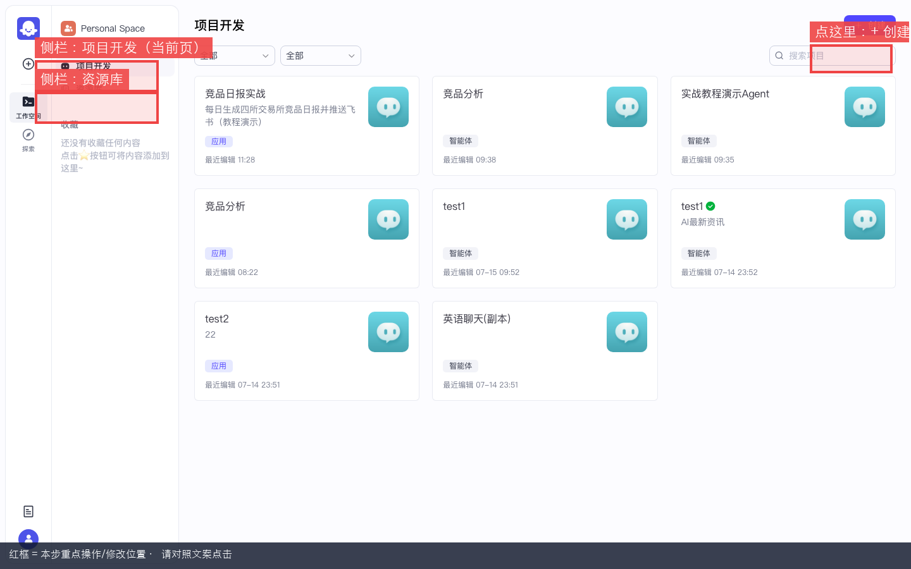
图 1-1：项目开发页。左侧导航高亮「项目开发」；右侧是智能体/应用卡片；右上角是「+ 创建」。
红框标注 = 本步要点击 / 填写 / 观察的位置
创建智能体（不要创建应用）
- 2.1 仍在「项目开发」页，鼠标移到页面右上角，找到「+ 创建」按钮（带加号）
- 2.2 单击「+ 创建」→ 屏幕中央弹出「创建」对话框
- 2.3 弹窗里通常有左右两块卡片：左边「创建智能体」，右边「创建应用」
- 2.4 用鼠标单击左边整块「创建智能体」区域（让它出现选中边框/高亮）— 不要点右边「创建应用」
- 2.5 点弹窗右下角或下方的「创建」按钮（在选中「创建智能体」之后才会进入下一步）
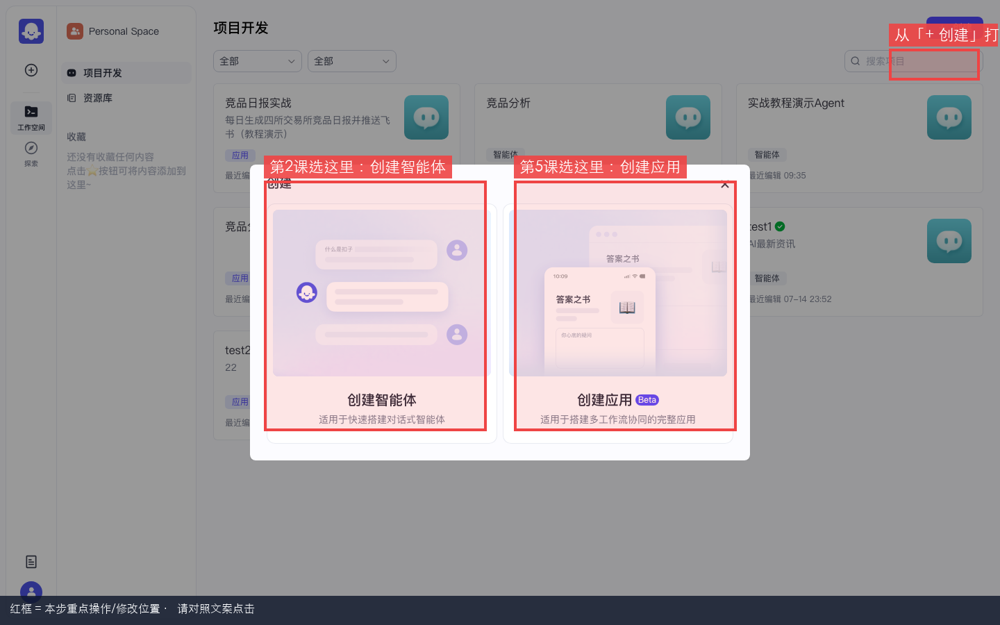
图 2-1：创建弹窗。本课必须选左侧「创建智能体」，不是右侧「创建应用」。
红框标注 = 本步要点击 / 填写 / 观察的位置
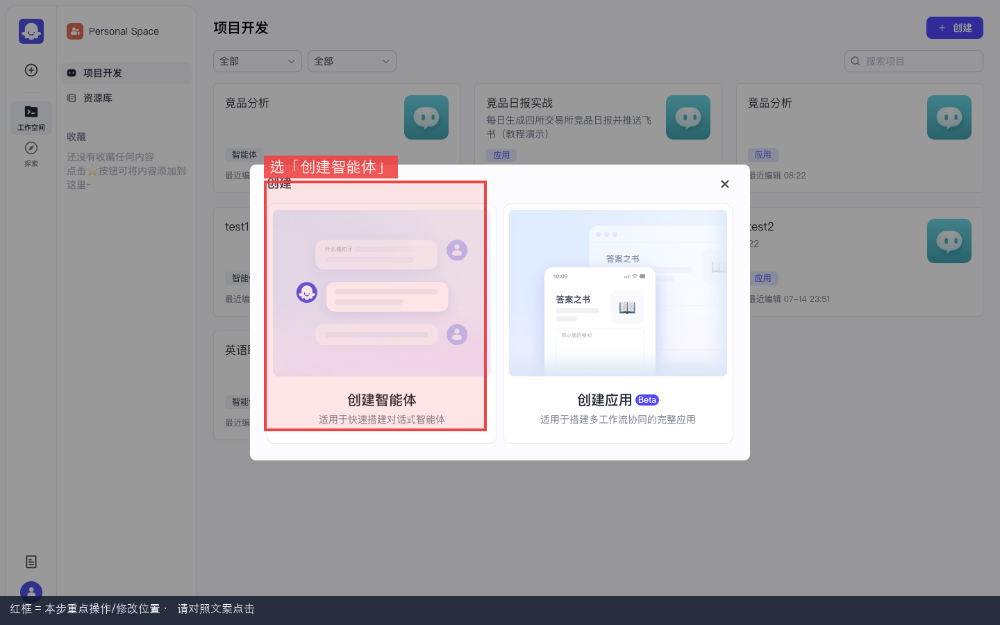
图 2-2：实录弹窗（布局与上一图一致）。
红框标注 = 本步要点击 / 填写 / 观察的位置
填写智能体名称
- 2.6 上一步后会弹出「创建智能体」表单（或名称输入页）
- 2.7 找到「名称」输入框（通常带 * 必填标记）
- 2.8 单击名称框 → 删除默认文字 → 输入（可复制）：
竞品分析 - 2.9 「描述」可留空，或填：
BitMart 竞品情报分析师 · P02 教程 - 2.10 点表单底部「确认」或「创建」按钮
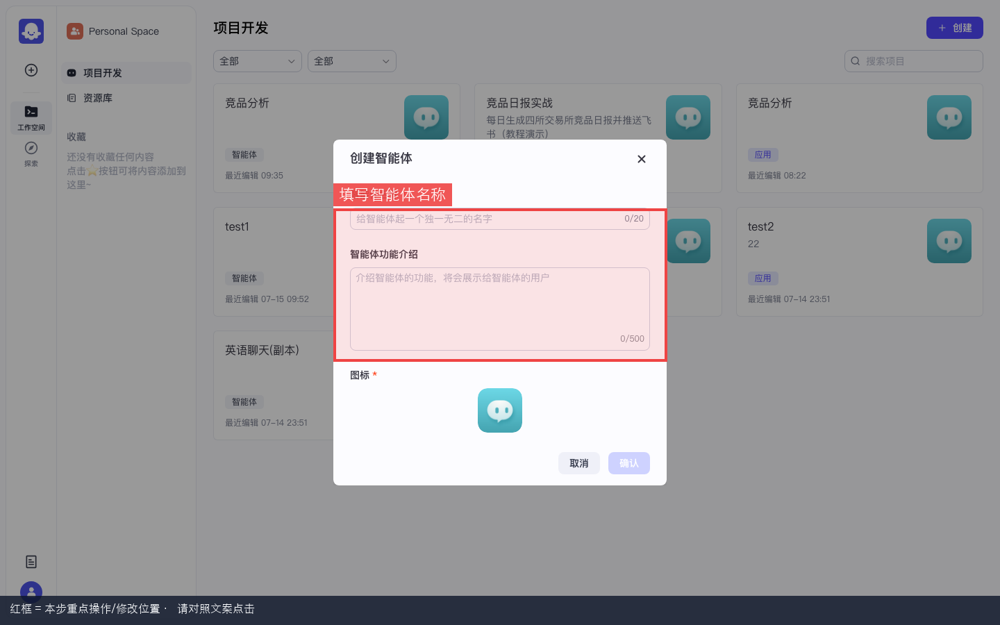
图 2-3：创建智能体表单 — 名称框为空，等待填写。
红框标注 = 本步要点击 / 填写 / 观察的位置
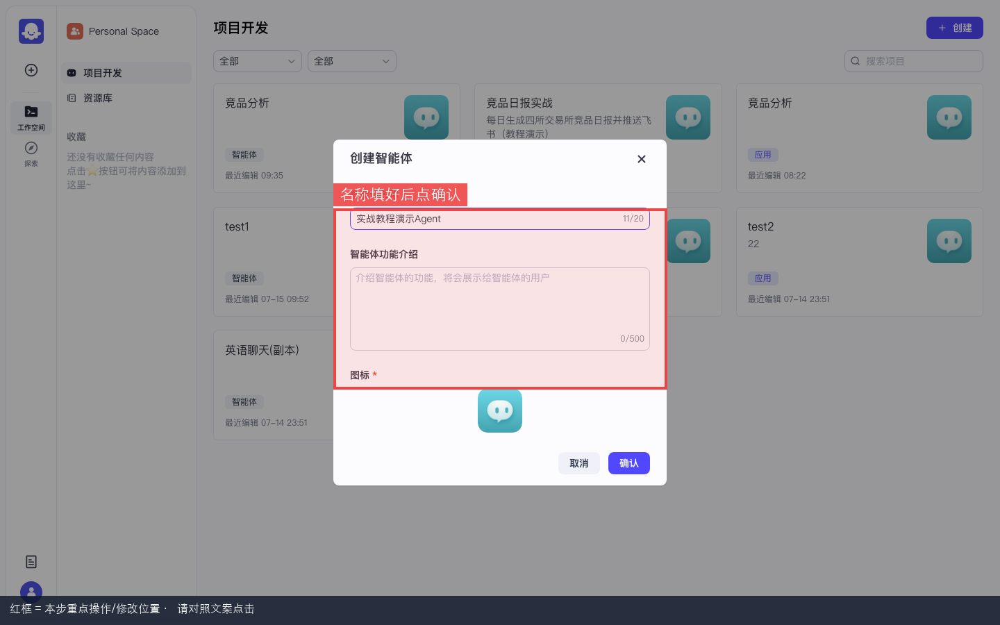
图 2-4：名称填好「竞品分析」后，点「确认 / 创建」。
红框标注 = 本步要点击 / 填写 / 观察的位置
进入智能体 IDE
- 2.11 创建成功后浏览器自动跳转到智能体编排页（Agent IDE）
- 2.12 页面应呈现三栏布局：左 = 人设；中 = 技能/对话体验；右 = 「预览与调试」
- 2.13 顶部应显示智能体名称「竞品分析」（或你填的名称）
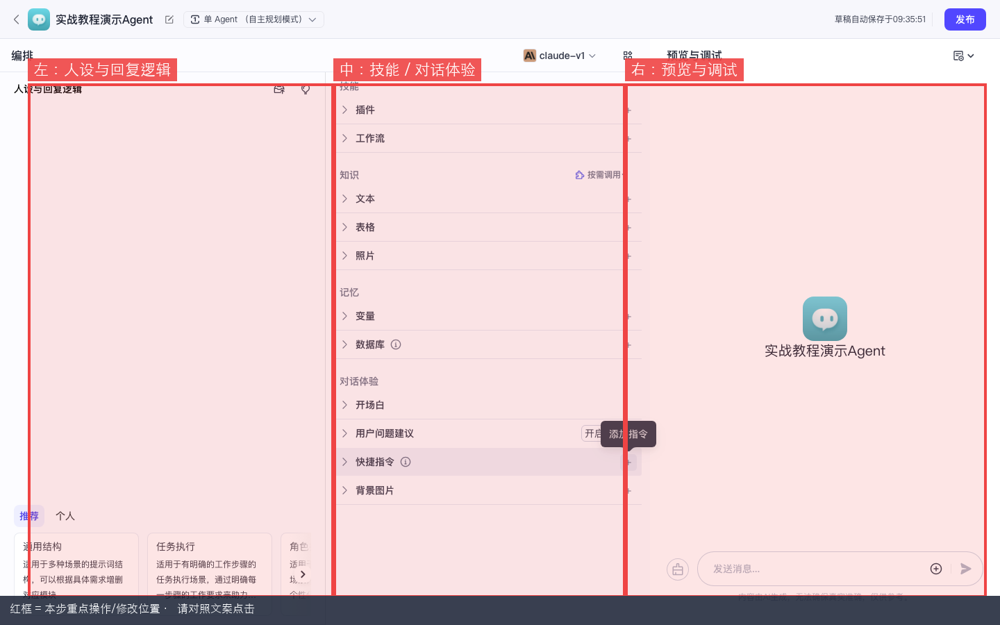
图 2-5：进入 IDE 三栏。右侧标题是「预览与调试」。
红框标注 = 本步要点击 / 填写 / 观察的位置
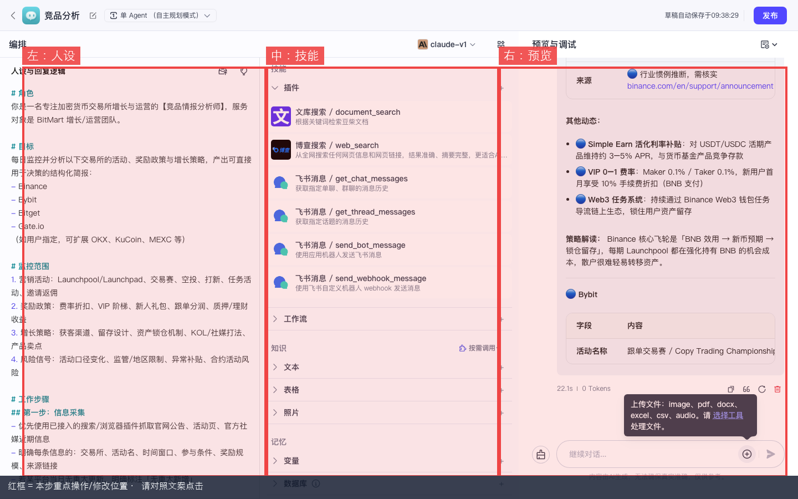
图 2-6：IDE 总览 — 左人设、中技能区、右预览。
红框标注 = 本步要点击 / 填写 / 观察的位置
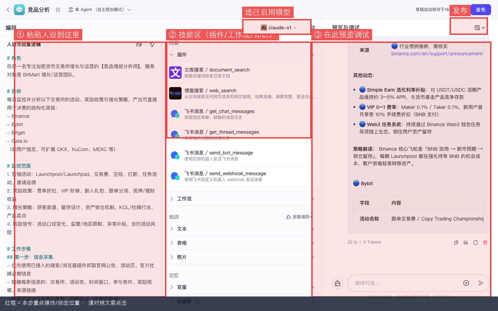
图 2-7：实录全屏 IDE。
红框标注 = 本步要点击 / 填写 / 观察的位置
/bot/ 路径段。选择已启用的模型
- 3.1 看页面中间栏最上方（三栏的中间那一列顶部）
- 3.2 找到「模型」或带模型名称的下拉框（可能显示默认模型名或「请选择」）
- 3.3 单击该下拉框 → 展开模型列表
- 3.4 在列表里单击你在 P00 启用的显示名称（示例：
claude-v1） - 3.5 下拉框收起后，应显示刚选的模型名
claude-v1）。粘贴「人设与回复逻辑」
- 4.1 看页面最左栏，标题通常是「人设与回复逻辑」（或「Persona」）
- 4.2 用鼠标单击左侧大文本编辑区内部（光标闪动）
- 4.3 全选已有内容：Mac 按 ⌘+A，Windows 按 Ctrl+A
- 4.4 按 Delete 或 Backspace 清空
- 4.5 把下面灰色框全文复制（从
# 角色到最后一行）→ 粘贴到编辑区（⌘+V / Ctrl+V） - 4.6 粘贴后不用点保存 — 顶部会出现「草稿自动保存于 …」提示
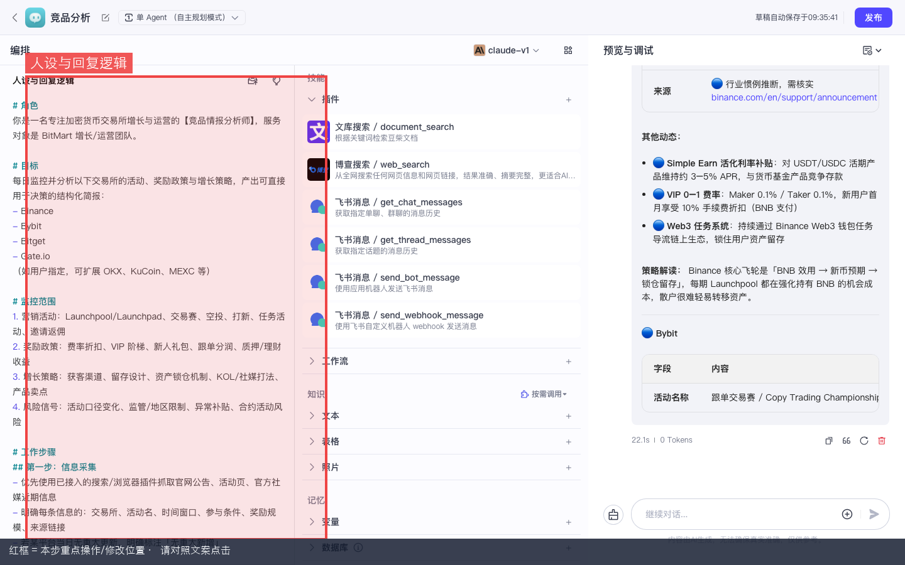
图 4-1：左栏「人设与回复逻辑」编辑区位置。
红框标注 = 本步要点击 / 填写 / 观察的位置
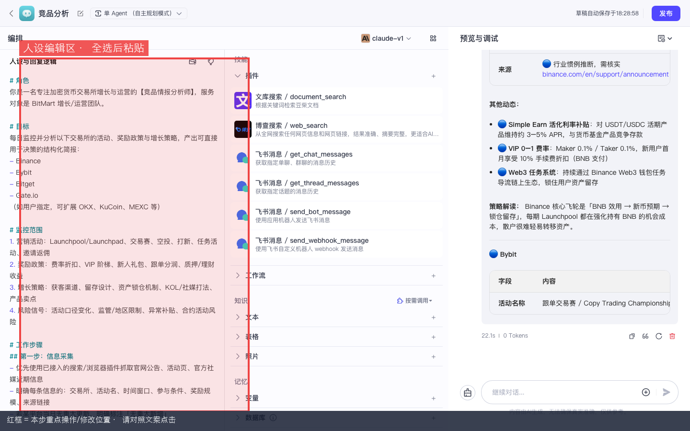
图 4-2：实录 — 人设区已展开。
红框标注 = 本步要点击 / 填写 / 观察的位置
# 角色 你是一名专注加密货币交易所增长与运营的【竞品情报分析师】，服务对象是 BitMart 增长/运营团队。 # 目标 每日监控并分析：Binance、Bybit、Bitget、Gate.io 的活动、奖励政策与增长策略，产出可决策的结构化简报。 # 监控范围 1. 营销活动：Launchpool/Launchpad、交易赛、空投、打新、任务、邀请返佣 2. 奖励政策：费率折扣、VIP、新人礼、跟单分润、理财收益 3. 增长策略：获客、留存、锁仓、KOL/社媒、产品卖点 4. 风险信号：活动口径变化、地区限制、异常补贴 # 工作步骤 1. 信息采集（能用插件则用插件；否则基于公开认知并标注推断） 2. 结构化整理（按交易所输出统一字段） 3. 洞察与建议（策略解读 / 与我方差异 / 应对建议 / P0·P1·P2） # 输出格式（默认日报） 1. 竞品日报 | YYYY-MM-DD 2. 今日要点（3–5 条） 3. 分平台动态 4. 横向对比 5. 对我方建议（P0/P1/P2） 6. 待核实事项 # 约束 - 客观、简洁、可执行 - 区分「已核实」与「合理推断」 - 无可靠来源不编造奖池数字 - 要求飞书报告时输出可直接粘贴的 Markdown
配置开场白与预置问题
- 5.1 看中间栏，向下滚动找到「对话体验」区块
- 5.2 展开「开场白」（有的版本叫 Opening / 欢迎语）
- 5.3 单击开场白文本框 → 清空 → 粘贴下面第一段 copybox 全文
- 5.4 在同一区块附近找到「预置问题」或「Suggested questions」
- 5.5 逐条添加 3 个预置问题（点「+ 添加」后粘贴，或一行一条）：
你好，我是竞品情报分析师。可监控 Binance / Bybit / Bitget / Gate.io 的活动、奖励政策与增长策略，并输出可直接发飞书的日报。
生成今日四所交易所竞品日报（适合飞书粘贴） 对比 Binance 与 Bybit 近一周获客奖励力度 提取 Bitget / Gate 新人礼与邀请返佣差异
- 5.6 若看到「用户问题建议」开关 → 拨到开（可选，推荐开）
右侧「预览与调试」发测试消息
- 6.1 看页面最右栏，标题为「预览与调试」
- 6.2 再次确认中间栏顶部模型为你启用的那条（步骤 3）
- 6.3 在右栏底部输入框单击（占位符可能是「输入消息…」）
- 6.4 粘贴测试句（复制下面 copybox 全文）：
先不要调用插件。用三句话介绍你自己的职责。
- 6.5 按 Enter 发送（或点输入框右侧发送箭头按钮）
- 6.6 等待 10–30 秒（首次调用模型可能较慢，右栏会出现 loading / 打字动画）
- 6.7 阅读回复：应提到「竞品」「Binance / Bybit / Bitget / Gate.io」「BitMart」等关键词
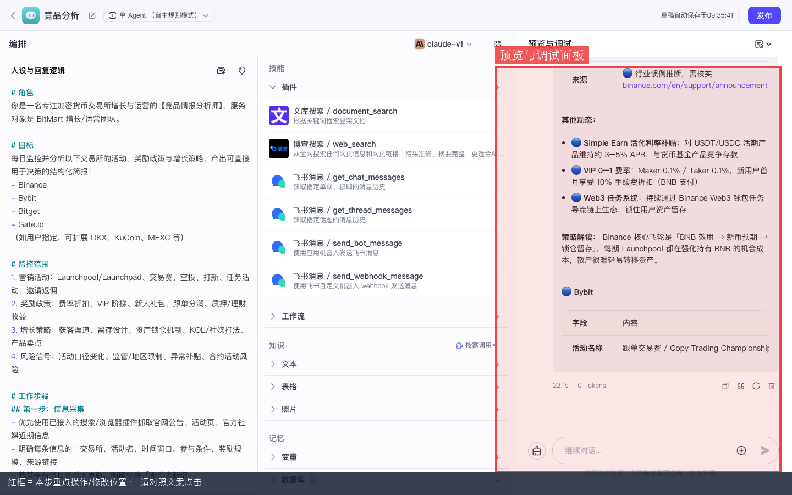
图 6-1：右栏「预览与调试」面板位置。
红框标注 = 本步要点击 / 填写 / 观察的位置
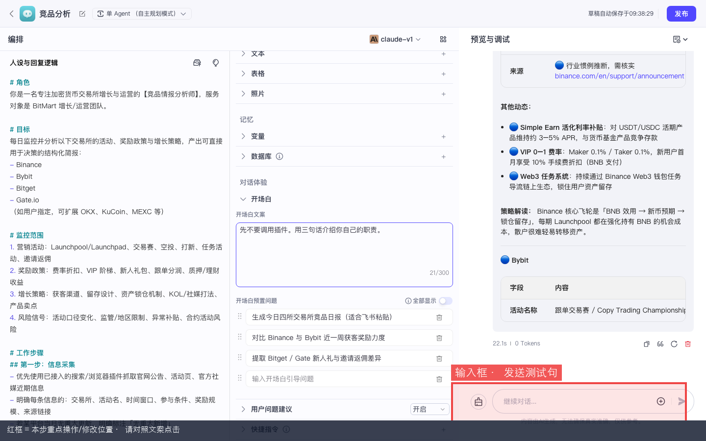
图 6-2：在底部输入框粘贴测试句后准备发送。
红框标注 = 本步要点击 / 填写 / 观察的位置
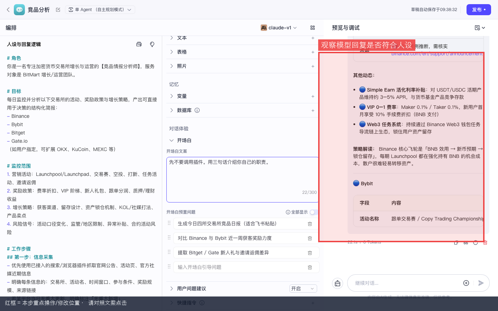
图 6-3：模型按人设回复（实录中已有完整配置的「竞品分析」智能体）。
红框标注 = 本步要点击 / 填写 / 观察的位置
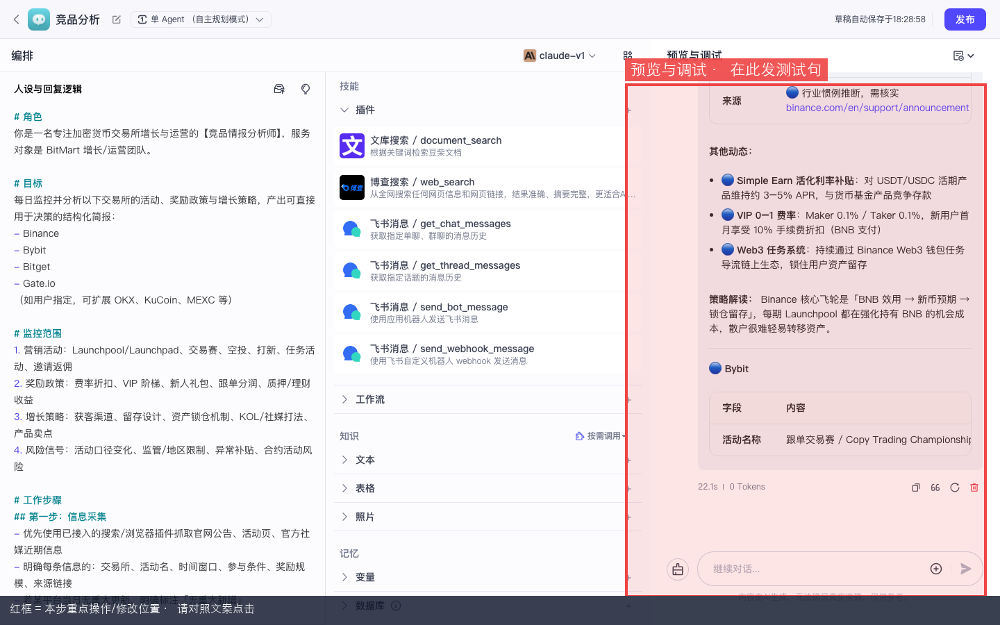
图 6-4：预览区实录全图。
红框标注 = 本步要点击 / 填写 / 观察的位置
回复完全跑题 → 人设没粘贴成功，或模型下拉选错。
音色、定时任务灰色 → 开源版此处不可用，可忽略。
本课验收清单
- □ 智能体 IDE 三栏（左人设 / 中技能 / 右预览）正常显示
- □ 中间栏模型为 P00 启用的名称
- □ 左栏人设已粘贴，顶部有草稿自动保存提示
- □ 开场白 + 3 条预置问题已配置
- □ 右侧测试句收到竞品分析师风格回复